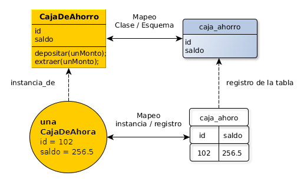

Object Relational Mapping (ORM)
Persistencia Orientada a Objetos en BDs Relacionales
Hasta hace un ratito eran felices
Era todo muy simple y transparente! ¿Por qué?
Porque persistíamos en una estructura física idéntica a la estructura que manejamos en memoria.
Si utilizamos una BD relacional la estructura física cambia y tenemos que trabajar un poco más.
Diferencia de Impedancia
Se da cuando desarrollamos en un modelo (ej: objetos) y persistimos en otro modelo (ej: tablas/relaciones).
- En Objetos navegamos a través de colaboradores vs los joins en relacional.
- En Objetos tenemos colecciones con su semántica (ej: Set), en relacional las relaciones y las restricciones.
- En Objetos tenemos Herencia y polimorfismo, en el relacional relaciones.
Diferencia de Impedancia
En base a estas diferencias, el ORM nos ayuda mapeando el mundo de objetos al relacional, de modo de poder disfrutar de la persistencia transparente.
¿Qué Mapeamos?
- Clase con Tabla
- Instancia con Tupla
- Atributo con Columna
¿Por qué vamos a usar una BDOO en esta Materia?
- Es un curso de alternativas a la persistencia relacional... :)
- Son seriamente utilizadas en la industria y la ciencia
- Programamos en Objetos
- Necesitamos entender y practicar sober persistencia por alcance
BD Orientada a Objetos
Veamos su API basada en JDO
¿Qué es JDO?
- JDO = Java Data Objects. Una API estandar para acceder datos persistentes. Ver Apache JDO.
- Las interfaces más importantes de la API son:
- PersistentManager: Es el contexto de persistencia, que ya vimos de que se trata
- Query: El componente encargado de construir consultas y obtener resultados. (😔 Ojo, no todo implementado)
- Transaction: El componente encargado de iniciar y completar transacciones
¿Qué requiero para utilizar ZooDB?
- Eclipse + Java 8
- Última versión de ZooDB
- Y sus depedencias: jta, jdo-api y slf4j-api
¿Cómo uso ZooDB?
Estructura de una Transacción
ZooHelper.createDb("dbfile.zoodb");
PersistenceManager pm = ZooJdoHelper.openDB(dbName);
pm.currentTransaction().begin();
try {
//Usar pm aca...
pm.currentTransaction().commit();
} catch (Exception e) {
pm.currentTransaction().rollback();
throw e;
} finally {
pm.close();
pm.getPersistenceManagerFactory().close();
}¿Cómo uso ZooDB?
Objetos Persistentes
Los objetos persistentes deben extender de org.zoodb.api.impl.ZooPC
public class Categoria extends ZooPC {
private Long id;
private String nombre;
//no-arg constructor requerido por JDO
private Categoria() {
}
...
}
¿Cómo uso ZooDB?
Persistir un Objeto Transient
...
try {
Categoria c = new Categoria(1L, "nombre categoria");
pm.makePersistent(c);
}
...¿Cómo uso ZooDB?
Traer una Instancia por Id
...
try {
Query query = pm.newQuery(Categoria.class, "id == 1");
Collection<Categoria> cat = (Collection<Categoria>) query.execute();
Categoria c = cat.stream().findFirst().get();
}
...¿Cómo uso ZooDB?
Traer todas las instancias de una clase
...
try {
Extent ext = pm.getExtent(Categoria.class);
for (Categoria p : ext) {
System.out.println("Categoria encontrada: " + p.nombre());
}
}
...¿Cómo uso ZooDB?
Modificar una Instancia
...
try {
Query query = pm.newQuery(Categoria.class, "id == 1");
Collection<Categoria> cat = (Collection<Categoria>) query.execute();
Categoria c = cat.stream().findFirst().get();
c.nombre("otro nombre...");
}
...¿Cómo uso ZooDB?
Queries
...
try {
Query query = pm.newQuery(Producto.class, "precio <= 3000");
Collection productos = (Collection) query.execute();
for (Producto producto : productos) {
System.out.println(producto);
}
}
...¿Cómo uso ZooDB?
zooActivateRead() y zooActivateWrite()
public class Producto extends ZooPC {
private Long id;
private String nombre;
private Categoria categoria;
public void categoria(Categoria categoria) {
zooActivateWrite();
this.categoria = categoria;
}
public Categoria categoria() {
zooActivateRead();
return categoria;
}
...
}